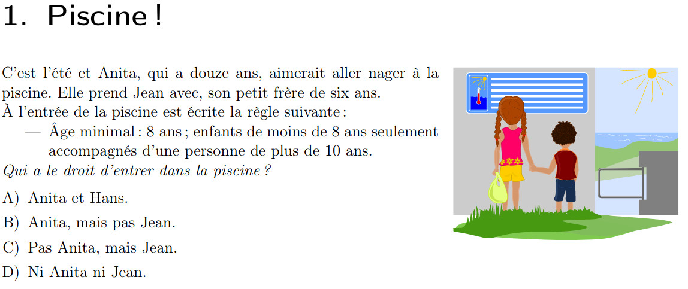

TP1-PROG-05 - Les tests conditionnels#
Instruction conditionnelle#
la structure est la suivante : SI … ALORS … SINON
En python :
if condition :
instruction1
else:
instruction2
La condition est un test. Un test compare deux valeurs et retourne VRAI ou FAUX. Par exemple :
si la variable a est plus grand que 4 alors …
si la chaîne de caractères prenom est égal à ‘Caroline’ alors…
Que l’on traduit en Python par :
if a > 4 :
et
if prenom == 'Caroline':
Attention à la notation, le mot en français “ALORS” se traduit par les deux points.
Si un test est vrai, alors il existe son opposé qui est faux. Et vice-versa !
le test “si la variable a est plus grand que 4” est vrai, alors l’opposé est “la variable a est plus petite ou égale à 4”
le test “si la chaîne de caractères prenom est égal à ‘Caroline’” est vrai, alors l’opposé est “la chaîne de caractères prenom n’est pas égal à ‘Caroline’”
En python cela se traduit par le mot-clef else.
if prenom == 'Caroline':
instruction...
else:
autre instruction
Il est possible d’imbriquer plusieurs tests
Exercice 1 : les mots de passe#
Ecrire un programme qui :
Affecte un mot de passe
123soleilà une variablemotdemande à l’utilisateur un mot de passe (variable stockée dans
mdp2)vérifie si le mot de passe entré par l’utilisateur est correct.
Affiche
mot de passe correctoumot de passe incorrect
Exercice 2 : pair ou impair ?#
Ecrire un programme qui vérifie qu’un nombre est pair (ou impair)
Modulo : reste de la division entière#
Afin de vérifier qu’un nombre nombre est pair ou impair, il suffit d’utiliser l’opérateur mathématique modulo. Le modulo donne le reste de la division entière et en Python, il se note avec le signe %. Par exemple : 7 modulo 2 vaut 1puisque 2 x 3 + 1 = 6 + 1.
print(7%2)
1
Exercice 3 pair et divisible par 5 ?#
Ecrire un programme qui vérifie qu’un nombre est pair ET divisible par 5.
Ce programme fait appel à une structure en *tests imbriqués” : on vérifie d’abord que le nombre et pair, puis ensuite s’il est divisible par 5. Cela donne donc 4 possibilités :
pair et divisible par 5 (par exemple 10)
pair et non divisible par 5 (par exemple 8)
impair et divisible par 5 (par exemple 15)
impair et non divisible par 5 (par exemple 17)
Plusieurs conditions dans un test : elif et opérateurs logiques and, or#
Lorsqu’il y a plusieurs conditions à remplir pour un test conditionnel, alors on peut utiliser les mot-clefs elif ou les opérateurs logiques or et and
La clause elif teste une nouvelle condition si la première (if) est fausse. Si cette condition est fausse, alors Python pousuit sur else:
if condition :
instruction
elif condition :
instruction
else :
instruction
S’agissant des opérateurs logiques :
Si un test requiert que deux tests soient vrais en même temps, on utilise and :
if condition1 and condition2 :
instruction
Si un test requiert que qu’un des deux tests soient vrais, alors on utilise or:
if condition1 or condition2 :
instruction
Exercice 3 : double condition avec opérateeur booléen#
Ecrire un programme qui vérifie qu’un nombre est divisible par 3 et par 7 en utilisant deux conditions dans un seul test.
Exercice 4 La Piscine (tiré du concours Castor Informatique)#

Analysons les conditions d’entrée:
Si la personne est âgée de 8 ans ou plus
Si la personne a moins de 8 ans, alors elle doit être accompagnée par une personne de 10 ans ou plus
Consigne :
Dessinez l’algorigramme
Ecrivez le programme en Python correspondant
Exercice 5 : les dates (pour aller plus loin)#
Objectif : déterminer si une date donnée est valide. Ecrivez un programme qui demande le jour jj, le mois mm et l’année aaaa et qui vérifie que le format est correct. Par exemple, la date 32.14.2025 n’est pas correcte. L’année doit être comprise entre la naissance du Christ et aujourd’hui
Exercice 7 : les couleurs RGB (pour aller toujours plus loin)#
Objectif : vérifier la couleur dominante d’un triplet RGB. Exemple : la couleur (23,250,165) en base 10 est à dominante verte. Attention, votre programme doit être capable de vérifier que la couleur entrée par l’utilisateur sous la forme R, G, B est grise ou en couleur.
Exercice 7 : la philosophie (pour aller encore loin)#
Ajoutez une question de type philosophie: “La grande question sur la vie, l’univers et le reste” dont la réponse est : A vous de trouver
Ajoutez une nouvelle catégorie de question de type psychologie en implémentant une nouvelle fonction quizz_psycho() sur le même modèle que les 2 autres.
En modifiant le code suivant
def quizz_info():
r = input("Qui est le meilleur prof: \n 1 : M. Keller \n 2: un autre ... \n Votre réponse:")
if r == '1':
print("Bonne réponse")
else:
print("Mauvaise réponse")
def quizz_philo():
r = input("quizz philo")
print("Quizz simple")
print("Jouons ? C'est parti...")
reponse = ''
while reponse != 'q':
reponse = input("Choisissez votre question: \n 1: informatique \n 2: philo \n Votre réponse ('q' pour quitter):")
if (reponse == '1'):
quizz_info()
elif (reponse == '2'):
quizz_philo()
elif (reponse == 'q'):
print("Vous avez décidé de quitter")
else:
print(reponse,"invalide. Tapez 1 ou 2 ou q pour quitter")
Quizz simple
Jouons ? C'est parti...
---------------------------------------------------------------------------
StdinNotImplementedError Traceback (most recent call last)
Cell In[2], line 16
14 reponse = ''
15 while reponse != 'q':
---> 16 reponse = input("Choisissez votre question: \n 1: informatique \n 2: philo \n Votre réponse ('q' pour quitter):")
17 if (reponse == '1'):
18 quizz_info()
File ~/.local/pipx/venvs/jupyter-book/lib/python3.11/site-packages/ipykernel/kernelbase.py:1274, in Kernel.raw_input(self, prompt)
1272 if not self._allow_stdin:
1273 msg = "raw_input was called, but this frontend does not support input requests."
-> 1274 raise StdinNotImplementedError(msg)
1275 return self._input_request(
1276 str(prompt),
1277 self._parent_ident["shell"],
1278 self.get_parent("shell"),
1279 password=False,
1280 )
StdinNotImplementedError: raw_input was called, but this frontend does not support input requests.